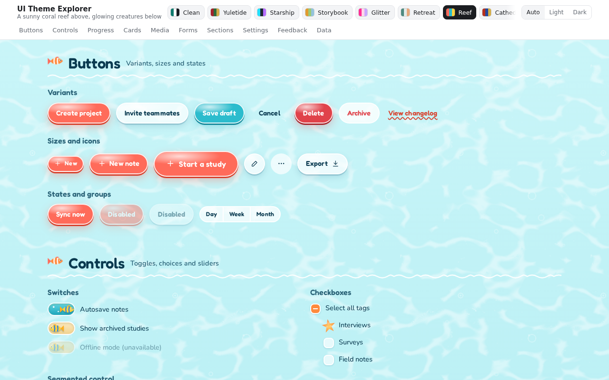
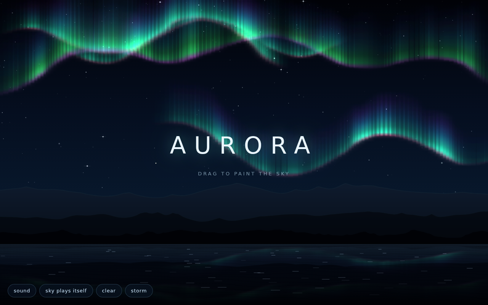

AI Playground
Here are mini-projects I've built with AI coding assistants to explore what's possible. Most of the code comes from vibe coding. I described in natural language what I wanted to end up with, and the assistant wrote it. Sometimes I guided it in different ways, such as telling it a good order to build things in, or asking for changes.
These little projects are creative experiments. In creative work, I often get messy and try unusual things. Unlike sites and tools that people need to use (which is what I normally build), these aren't always polished.
Projects marked with aren't designed to be accessible so user beware.
-
UI Theme Explorer (not designed to be accessible)

I asked Claude Opus 5.5 (high effort) for a set of interface components (buttons, forms, cards, data tables, etc.) and then used natural language to essentially one-shot 14 different theme variations. The themes include a calm SaaS look, a coral reef, and glam glitter. Each theme also has a dark mode to explore. WARNING: might hurt your eyes.
-
Aurora (not designed to be accessible)

An interactive musical night sky. Drag to paint curtains of aurora with chimes playing as you go. An early exploration stemming from a late night request to Claude Opus 4.8 to "make me something sparkly." Might be a little heavy in your browser.